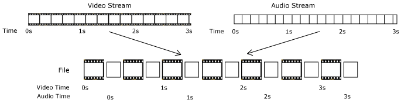
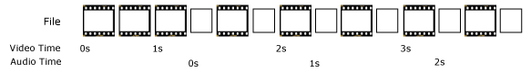
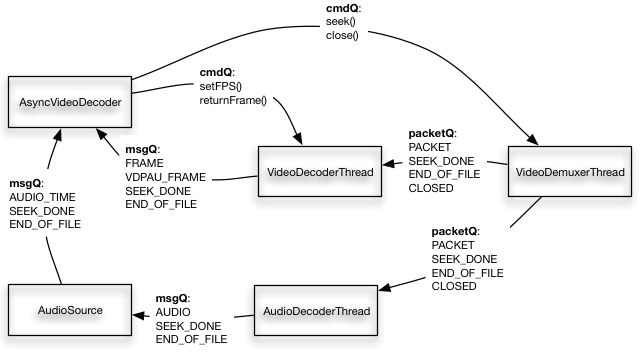

Video Decoder Internals¶
This is an in-depth look at the design of the libavg video decoding subsystem. This module is responsible for all video and audio playback that takes place in a libavg application. It uses libav/ffmpeg for the low-level work of decoding different media formats.
Besides the obvious goal of being able to play back as many media formats as possible, there are several secondary goals which affect the design. These are:- Efficiency: decoding should take as little processing power as possible, and so should other operations on the video such as open, close and seek.
- Low latency: There should be a minimum of delay between the initiation of an operation and its completion.
- Ease of use: We want a clear internal interface to the decoding subsystem. In particular, error messages should be generated without a delay if possible. This means that operations that are error-prone should happen synchronously.
Unfortunately, there is a conflict between being efficient and having low-latency seeks: Multi-threaded decoding is a lot more efficient, but seeks take much longer as well. For this reason, libavg includes two high-level decoders: AsyncVideoDecoder operates in a traditional threaded fashion and SyncVideoDecoder works completely synchronously. These are useful in different settings. When you want to play back videos and possibly seek once in a while, use the AsyncVideoDecoder. Conversely, the SyncVideoDecoder supports seeking at interactive frame rates and makes it possible to do video 'scratching' or otherwise seek continuously.
While the VideoNode itself lives in src/player, most of the rest of the code is in src/video.
In the rest of the document, we'll go through the module in a roughly top-down fashion. First, we'll look at the interface that it exposes and general usage from the outside. A short aside describes how media files are organized in general. This sets the stage for the description of the actual decoding module. The SyncVideoDecoder is described first, because it is the simpler one. The remainder of the page goes through the internals of the AsyncVideoDecoder. This includes the general threading design as well as audio and video decoding threads.
Node Interface¶
Only a thin high-level interface to the video decoder is presented to the VideoNode. All of the details are handled by the decoder classes in src/video. The principal sequence of calls in VideoNode looks like this:
1// In constructor
2pDecoder = new VideoDecoder()
3// In VideoNode::open()
4pDecoder->open(sFilename)
5// When the display becomes available
6pDecoder->startDecoding()
7for (each frame) {
8 // In VideoNode::preRender()
9 pDecoder->renderToBmp(pBmp, time)
10 upload pBmp to texture
11}
12// In VideoNode::close()
13pDecoder->close()
These functions are invoked in different frames, so the calls are spread throughout VideoNode.cpp. The decoder constructed is either a SyncVideoDecoder (if threaded=False) or an AsyncVideoDecoder (if threaded=True). The constructors don't actually do much - the first actual logic happens in open(). In this function, the video file is opened and parsed to find video and audio streams. If any of this fails (i.e. because of a missing file), an exception is raised synchronously. After open, information like the frame size, fps and video format is available. When startDecoding() is called, the asynchronous decoder starts additional threads and fills a queue of frames with data (see below). The synchronous decoder basically ignores startDecoding().
The functions renderToBmp() and renderToBmps() fill bitmaps with the video data for a specific time. This may involve discarding video frames if the application thread is slower than the video frame rate (e.g. a 30 Hz video and a laggy application with 10 frames per second). In the opposite case, the video is slower and renderToBmp() just leaves the old data in the bitmap if there is no new video frame. One typical example of this is a 60 Hz application showing a 30 Hz video.
Media File Layout Basics¶
To understand how a decoder works, we need to know how a video file is organized. Conceptually, a media file consists of one or more streams of data - for example, a typical file will contain a video, an audio and perhaps a subtitle stream. These streams are subdivided into chunks of data called packets. As shown in the figure below, streams are interleaved in the file so packets that should be decoded at a similar time are close to each other.

Sadly, however, packets in a file are not always strictly in order of ascending timestamps, even if the packets in the streams are ordered in time. The following image shows a typical file that has this issue. The audio stream has a delay:

In general, media files are organized around a container format (e.g. mov, mkv, wav) and one or more codec formats (e.g. h264, mpeg2, mjpeg, mp3). The container format specifies how packets, streams and meta-information are arranged in a file. A codec format specifies the storage and compression of one stream type. Typically, the container format doesn't know anything about the actual encoding of the individual streams, but it will support one or more codec formats that take care of this.
Most video file formats only store deltas of previous (or following) frames for the great majority of frames. By only storing the changing pixels, the space needed is greatly reduced. Once in a while, a complete frame - a keyframe - is inserted to provide a baseline.
Synchronous Decoding¶
As mentioned above, libavg supports completely synchronous decoding. In this case, three objects collaborate to decode videos: a SyncVideoDecoder, an FFMpegDemuxer and an FFMpegFrameDecoder. The SyncVideoDecoder opens and closes the video stream and generally acts as a façade for the module. The FFMpegDemuxer extracts the individual packets from a file and separates them into streams. So, when SyncVideoDecoder is asked for a frame, it gets packets from the demuxer and feeds them to FFMpegFrameDecoder until the frame is complete (in SyncVideoDecoder::readFrame()). Because of decoder internals, libav/ffmpeg might deliver frames even after the end of the file has been reached - this is taken care of separately.
Seeking involves a call to the appropriate libav/ffmpeg function - av_seek_frame - in the demuxer. After this call, the stream will be at the nearest keyframe before the intended position. Decoding commences from there, but all frames before the intended frame are discarded and not displayed. Seeking to a keyframe is the only option, since it's impossible to decode a delta frame without knowledge of the preceding frames.
Asynchronous Decoding¶
Asynchronous decoding involves five threads: A demuxer, a video decoder, an audio decoder, the main application thread and the audio output thread. The threads communicate exclusively using thread-safe queues - there are no additional locks or shared variables. The secondary threads responsible for demuxing and decoding are created in startDecoding(). Everything that happens before that is single-threaded, so the file is opened and the header parsed in the main thread, making sure that any errors opening the file are easy to handle. The following image gives an overview of the different threads and queues - data moves to the left, while commands are sent to the right.

Base classes: Worker Threads, Queues and Commands¶
All secondary threads are based on the WorkerThread class (in src/base). A class derived from WorkerThread gets its work() method called in a loop until that function returns false or stop() is called. The libavg Queue class is a standard thread-safe queue that takes the class of its entries as a template parameter. Each WorkerThread has a Queue<Command> that can be filled with Commands for the thread. A Command works like a python lambda. It is put into the queue in a controlling thread and executed after the next work() iteration in the WorkerThread. In the case of video decoding, a typical command is seek(). Basically, you can put any function calls into the queue and the WorkerThread will take care of execution. All commands shown in the figure above are sent this way.
The video threads have additional queues that transport data (packets, frames and audio samples) to the application. Flow control is realized by limiting the number of entries in a queue - when the queue is full, the thread waits for space to become available.
Demuxer and Decoders¶
The VideoDemuxerThread is responsible for reading the video file, separating the streams (using libav/ffmpeg) and putting video and audio packets into queues for the decoders. Data in unused streams is discarded. The basic functions necessary to implement this are in the FFMpegDemuxer class that is also used when decoding synchronously.
The VideoDecoderThread receives a series of video packets via a packet queue and decodes them into bitmaps (mainly in VideoDecoderThread::sendFrame()). These bitmaps are put into the msgQ and retrieved by the AsyncVideoDecoder for use by the VideoNode. Again, the basic functionality to realize this is in a class shared with the synchronous decoder: FFMpegFrameDecoder. This class wraps the actual libav/ffmpeg decoding calls. It also takes care of calculating frame times and converting libav/ffmpeg frames to libavg Bitmaps.
The AudioDecoderThread, then, takes audio packets, decodes them and puts them into a queue for the AudioSource. Along the way, it handles resampling if needed. Resampling comes into play if the sample rate, sample format or number of channels required by the output device is different from that delivered by the stream.
Seeks and End of File Handling¶
As can be seen in the figure above, a seek is initiated when the appropriate command is sent to the demuxer. The demuxer does the seek in the stream and sends SEEK_DONE messages that cascade through the threads. A thread that sends a SEEK_DONE always precedes this by clearing its outgoing message queue(s) - packets, video frames and audio data in these queues are now obsolete and can be discarded.
As with synchronous decoding, asynchronous seeks initially position the stream at a keyframe before the destination. On the video side, this is again handled by discarding frames (in AsyncVideoDecoder) until the correct one arrives. On the audio side, packets are discarded by AudioDecoderThread if this is needed. In the (improbable, but possible) case that the audio seek actually jumped too far in the file, we insert an appropriate amount of silence into the stream instead.
An additional complication occurs if two seeks are initiated in quick succession. In this case, the first seek may still be in progress when the second arrives. Thus, clearing the message queue might also discard the SEEK_DONE of the first seek and the application thread can't rely on receiving a SEEK_DONE for each seek(). For this reason, seeks have sequence numbers embedded. AsyncVideoDecoder knows that the last seek has completed when it gets a SEEK_DONE with the appropriate sequence number.
When end of file (EOF) is reached in the demuxer, it triggers a similar cascade of END_OF_FILE messages through the threads.
Accelerated Video Decoding¶
Currently, accelerated video decoding is supported using NVidia's VDPAU interface. In this case, the VideoDecoderThread doesn't actually decode the packets at all. Instead, ffmpeg is configured to use a VDPAU-based codec. The msgQ to the application thread only contains a reference to the VDPAU data, and the AsyncVideoDecoder requests the bitmaps from VDPAU. There is currently no support for using VDPAU to decode directly into a texture.
Pixel Format Conversion¶
Pixel format conversion consists of converting the pixels that are generated by the decoder to RGB or RGBA pixels that can be displayed. If not optimized in some form, pixel format conversion can take the majority of time spent decoding. There are two code paths in libavg for this:
- In the case of yuv420p, yuvj420p and yuva420p-encoded videos, a GPU shader handles the conversion. This is set up in
VideoNode. - In all other cases, conversion is handled in the decoder thread.